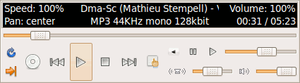

AlsaPlayer
Dieser Artikel wurde für die folgenden Ubuntu-Versionen getestet:
Ubuntu 16.04 Xenial Xerus
Ubuntu 14.04 Trusty Tahr
Zum Verständnis dieses Artikels sind folgende Seiten hilfreich:
AlsaPlayer  hat sich zum Ziel gesetzt, ein Gerüst zur Wiedergabe von Multimedia-Dateien zu schaffen, wobei der Schwerpunkt auf PCM gelegt wird. Mittlerweile unterstützt das Programm auch andere Ausgabesysteme (Soundserver) wie ESD, JACK, NAS oder OSS und nicht nur ALSA, nach dem dieser Player benannt wurde.
hat sich zum Ziel gesetzt, ein Gerüst zur Wiedergabe von Multimedia-Dateien zu schaffen, wobei der Schwerpunkt auf PCM gelegt wird. Mittlerweile unterstützt das Programm auch andere Ausgabesysteme (Soundserver) wie ESD, JACK, NAS oder OSS und nicht nur ALSA, nach dem dieser Player benannt wurde.
Unterstützt werden verschiedene Audiocodecs wie MP3, WAV, FLAC und OGG sowie Audio-CDs. Musikdateien können mit beliebiger Geschwindigkeit abgespielt und so in der Tonhöhe verändert werden. Der AlsaPlayer unterstützt Wiedergabelisten und kann per Plugins erweitert werden. Die Wiedergabe von Streams, z.B. Internetradio, ist ebenfalls möglich. Der Bedienkomfort ist zwar begrenzt, dafür ist das Programm einer der ressourcenschonensten grafischen AudioPlayer.
Installation¶
|  |
| AlsaPlayer ohne ... |
Folgendes Paket muss installiert [1] werden:
alsaplayer-common (universe)
 mit apturl
mit apturl
Paketliste zum Kopieren:
sudo apt-get install alsaplayer-common
sudo aptitude install alsaplayer-common
Nach erfolgreicher Installation ist das Programm bei Ubuntu-Varianten mit einem Anwendungsmenü unter "Unterhaltungsmedien -> AlsaPlayer" zu finden [2].
Bedienung¶
| ... und mit Wiedergabeliste |
Wiedergabe¶
Neben den üblichen Knöpfen Wiedergabe , Stop , vorheriges Stück und nächstes Stück  findet man die Positionsanzeige im gespielten Stück. Außerdem gibt es "Speed control" zum stufenlosen Regulieren der Abspielgeschwindigkeit, "Volume control" und "Balance".
findet man die Positionsanzeige im gespielten Stück. Außerdem gibt es "Speed control" zum stufenlosen Regulieren der Abspielgeschwindigkeit, "Volume control" und "Balance".
Um eine einzelne Datei wiederzugeben, kann man im Dateimanager Wiedergeben mit auswählen und dann als Befehl alsaplayer eintragen.
Wiedergabeliste¶
Der Wiedergabelisten-Editor wird durch Anwählen von erreicht. Um Stücke wiedergeben zu lassen, müssen sie in das Playlistenfeld gezogen oder geladen werden. Diese Liste steht auch beim nächsten Start zur Verfügung, sofern man keine CD oder neue Liste aufruft. Playlisten können nach Bedarf gespeichert und wieder geladen werden.
Die Steuerung:
| Wiedergabeliste | ||
| Button | Beschreibung | |
 | "Add" | Datei oder Internetadresse abspielen |
 | "Remove" | Dateien aus der Liste löschen |
| "Shuffle" | Zufällige Wiedergabe | |
 | "Open" | Wiedergabeliste laden |
 | "Save" | Wiedergabeliste speichern |
 | "Clear" | Inhalt der Wiedergabeliste löschen |
CD¶
Über  startet man die CD-Wiedergabe. Der Aufruf einer CD löscht ggf. die aktive Playliste.
startet man die CD-Wiedergabe. Der Aufruf einer CD löscht ggf. die aktive Playliste.
Streams¶
Die direkte Eingabe einer Stream-Internetadresse ist nicht vorgesehen, kann aber über die Kommandozeile erfolgen:
alsaplayer PLAYLIST oder STREAM-URL
Beispiel:
alsaplayer http://ubuntu.hbr1.com:19800/ambient.ogg
Menü¶
| Menü |
Das Menü erlaubt die Steuerung des Programms via Maus. Neben den Programmeinstellungen kann man hier ein oder mehrere Oszilloskope aktivieren, die CD-Wiedergabe starten oder das Programm mittels "Quit" beenden.
Einstellungen¶
Um Einstellungen am Programm vorzunehmen, führt man einen  Rechtsklick auf der grafischen Oberfläche aus und wählt im neuen Menü den Punkt "Preferences" aus.
Rechtsklick auf der grafischen Oberfläche aus und wählt im neuen Menü den Punkt "Preferences" aus.
| Einstellungen | |
| Reiter | Beschreibung |
| "General" | optische Anpassungen |
| "Play" | Wiedergabeoptionen festlegen |
Pegelanzeige¶
| Levelmeter |
Um eine Pegelanzeige zu aktivieren, den Menüpunkt "Scopes..." anwählen und eines aus der Liste mit einem  Doppelklick aktivieren.
Doppelklick aktivieren.
Problembehebung¶
Kein Symbol im Menü¶
Wer ein Symbol neben dem Menüeintrag von AlsaPlayer vermisst, lädt sich das nebenstehende Bild herunter und kopiert es mit Root-Rechten [4] nach /usr/share/pixmaps/alsaplayer.png.
Öffnen mit...¶
Wenn der Alsaplayer im Dateimanager nicht als Auswahl unter "Öffnen mit..." angeboten wird, bearbeitet man die Datei /usr/share/applications/alsaplayer.desktop mit einem Editor und Root-Rechten und ergänzt die Exec-Zeile:
Exec=alsaplayer %u
 Übersichtsartikel
Übersichtsartikel- Erstellt mit Inyoka
-
 2004 – 2017 ubuntuusers.de • Einige Rechte vorbehalten
2004 – 2017 ubuntuusers.de • Einige Rechte vorbehalten
Lizenz • Kontakt • Datenschutz • Impressum • Serverstatus -
Serverhousing gespendet von